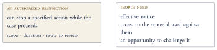
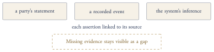
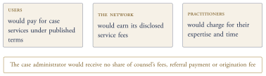

Business is moving onto AI faster than commerce moved onto the internet, and AI agents can now do the work.
In a fictional maintenance dispute, a company’s AI agent, software acting on its instructions, orders a repair. The contractor’s system records completion and requests payment, although the company says the equipment still fails.
Its agent withholds payment while another system schedules work on the assumption that the repair is complete.
A court can hear the dispute. Meanwhile, the companies need to preserve the evidence, establish which further actions may proceed, and reach someone responsible for the case.
Their software needs to distinguish a contested payment request from an established obligation, and an interim order, which applies while the case proceeds, from a final decision.
The request for an AI court keeps recurring in my conversations about automating an economy. Once companies can act through agents, a sovereign needs a procedure through which people can challenge automated conduct and obtain an effective remedy.
I would begin with AI preparing and analysing cases, with judges and arbitrators responsible for deciding them under the applicable law. Arbitrators form a tribunal under an effective agreement covering the dispute.

The institution must connect the records, the proceeding and the resulting actions while preserving each participant’s authority. This work can begin within an existing court or arbitral institution, under its own authority.
A court must decide what a recorded transaction means for the parties’ rights
The contractor’s economic claim is a right to payment under the contract’s conditions. A legal claim asks a competent forum to determine or give effect to that right.
The parties can agree on the recorded transaction while disagreeing about its legal consequences. Their systems might agree that a technician attended, submitted a report and marked the job complete.
The dispute concerns what the contractor promised, whether the work satisfied that promise, and what remedy follows. Counting the recorded steps answers only part of the case.
Other legal claims begin without an agreement between the parties. Someone whose property an automated operation damages may seek a remedy. The procedure must identify a lawful forum for that person, including a court where the matter requires one.
An arbitration route needs an effective agreement covering the parties and dispute. United Nations Commission on International Trade Law, Model Law on International Commercial Arbitration (1985, with amendments adopted in 2006), Article 7.
Urgent protection must preserve a fair hearing
Automated activity can create further obligations while an earlier one remains contested. In the repair example, another agent may order replacement equipment or arrange further work. The economic consequences accumulate before anyone has settled the original disagreement.
Conventional litigation and arbitration can decide such disputes. Their procedures already provide ways to preserve evidence and seek interim relief.
Arbitration rules also require equal treatment and a reasonable opportunity to present a case. Those requirements remain essential when the underlying activity is automated. United Nations Commission on International Trade Law, Arbitration Rules (as revised in 2010), Articles 17 and 26.
A lawyer may have to reconstruct an agent’s authority, recover records from several providers and explain what a software event meant.
After an order, someone must establish which systems it reaches, who may act on it, and whether they did. Faster document drafting leaves that work to be done.
A small contested payment can require the same initial work of identifying parties, finding the agreement and assembling evidence as a larger dispute. If preparation costs more than the potential recovery, pursuing the claim can deepen the loss.
Reusing reliable records could reduce that fixed cost. Evidence can be preserved immediately under the applicable authority.
An authorized restriction can stop a specified action while the case proceeds, with a defined scope, duration and route to review. A filing alone should trigger a payment hold only where law or an effective agreement provides for it.


People need effective notice, access to the material used against them, and an opportunity to challenge it. A machine’s ability to produce submissions quickly supplies no reason to shorten those rights.
Operating records can reduce the cost of preparing a dispute
The cost of respecting those rights depends partly on how much the lawyer must reconstruct. The AI agents running a company can preserve the records a later proceeding will need, beginning with an asset’s creation, or origination.
Mass lets AI agents automate companies, trade, commerce and markets, and the origination, management and maintenance of assets, end to end and across borders. Every action they take is compliant and lawful by default.

Mass runs companies, institutions, and deployments. Each company’s own AI agent, on any AI model it chooses, drives the company’s operations from formation to closure.
The United Arab Emirates has agreed to deploy Mass for the entire federal economy, starting with pilot programmes in the emirates of Ras Al Khaimah and Abu Dhabi. The Abu Dhabi Global Market deployment is live in production.
The UAE pilot is live, and reporting for the National Economic Registry (NER) of the United Arab Emirates is live; people need records to challenge automated conduct.
Each economy that connects adds a market for every company on the network, and once enough economies run on one network, those that come later build on it. Pilots cover at least 10,000 entities per jurisdiction, so courts need records parties can inspect and challenge.
Mass makes the compliance call before each action runs. It learns from every economy it serves how to combat fraud and which practices work best.
Fraud takes priority. Lessons travel with proofs each receiving institution checks before choosing what to adopt. Those choices shape the checks, evidence and consents recorded for later examination and challenge.
In the repair dispute, the case service would need the agent’s authority, the agreed work and the events surrounding the payment request. The proceeding’s disclosure rules would govern access. The tribunal would determine whether the contractor performed the repair and what remedy follows.
AI should prepare a case that a practitioner can examine
The first useful AI contribution is a prepared case package. It should connect each allegation to the relevant agreement, events and original evidence. It can organize a chronology, identify missing records, find relevant authorities and explain where apparently similar cases differ.
In the repair dispute, the practitioner should see the promised standard of performance beside the completion report and the company’s contrary evidence. Agreed facts and contested assertions need to remain distinguishable throughout the package.
A summary should distinguish a party’s statement, a recorded event and the system’s inference, with each assertion linked to its source. The underlying records must remain available for inspection under the proceeding’s disclosure rules. Missing evidence stays visible as a gap.


The commercial system also needs to retain the authority under which the agent acted, the instructions it received and the relevant software configuration.
If an AI output influenced an action, that output belongs in the record. Asking a newer model to reconstruct an earlier answer would produce new analysis.
A signature can establish who issued a completion report. Establishing the equipment’s condition requires evidence about the equipment. I develop that distinction between a record’s integrity and its meaning in When Sovereigns Disagree.
The case service must expect hostile submissions. Text inside a party’s document must remain evidence, with no power to change the software’s instructions or permissions. Confidential material needs access controls that separate the parties’ private work from material available to the tribunal.
A challenge to the system itself requires independent examination. The operator may hold relevant records and may be a party to the dispute.
The procedure must let an independent decision-maker obtain the necessary evidence and hear the challenge. That requirement affects record retention, disclosure and the appointment process from the start.
People and institutions remain responsible for the work they undertake
Counsel must examine the prepared case, verify the authorities they rely on, advise their client and engage with the other side. The judge or arbitrator needs the time and access to assess the parties’ arguments independently and give reasons for the decision.
An omitted document could result from a collection failure, an access restriction or an inaccurate summary. The records should make those causes distinguishable.
The service agreement must identify who maintains the records, corrects errors and answers for failures within their responsibility. The company using an agent, its software provider and its legal adviser perform different functions.
Applicable law and their agreements determine the duties and liability attached to each. Professional insurance, agreements to cover specified losses and operating controls must address the actual work each participant undertakes.
An operator faces a financial conflict if it administers a dispute involving an institution whose fees support its business. Appointment and challenge procedures need to protect the decision from that relationship.
Technical access to the case file must remain separate from authority to alter the proceeding.
Momentum builds the network. Recourse runs dispute resolution and carries outcomes into execution. It is at the research and design stage, and its company has yet to be formed.
Its research separates case administration, evidence records and the transmission of outcomes to institutions entitled to act. Judicial power remains with courts, and arbitral awards come from properly constituted human tribunals.
A decision needs a lawful route to its remedy
Suppose the tribunal determines that part of the repair fee is payable. The resulting order must identify the obligation it concerns and the action it permits or requires.
A payment provider needs an instruction whose issuer and contents it can verify, within the authority it has been given. A registry, which maintains official records, needs the competent authority for any change.
The case service should track those acts separately. Issuing an award, permitting execution, sending an instruction and receiving money are different events. Each has its own responsible actor and evidence.

A delayed acknowledgment should prompt a status check before the system attempts another payment.
A stay, which suspends specified proceedings or actions, can change what happens next. The system needs to check current authority before a further action and preserve evidence of any action already completed.
A later correction should enter as a new record so the original decision remains available for examination.
A common record can help courts, tribunals and providers coordinate their work. Each still acts within its own authority, including the local conditions for recognizing an outcome and reaching assets.
Completed recovery requires money the recipient can spend or withdraw, with the transfer settled under the applicable law. Any period during which the bank or payment provider can recall or reverse the payment must also have ended.
If the case administrator closes, active matters need a responsible successor, accessible records and funding for unfinished duties.
A new court needs funded practitioners before parties rely on it
Parties need confidence that qualified practitioners will be available before they entrust a case to a new institution. Practitioners need work worth accepting and a procedure under which they can responsibly do it.
The founding practitioners need defined roles. Senior legal figures can help write the rules, test case packages and determine which questions require a hearing.
They can train practitioners and accept appointments within their qualifications and conflict rules. The institution must agree their duties, availability and remuneration.
I would start with a defined class of disputes whose evidence and procedural requirements can be understood well. Participating businesses would adopt effective dispute terms where appropriate and arrange to preserve the necessary records.
A funded panel and case administration would be available before those businesses rely on the service.
That starting scope should expand when the institution can demonstrate that it handles the work. Early cases need close attention to notice, missing evidence, contested summaries and the actions following a decision.
Those observations can improve preparation and administration. The next tribunal retains responsibility for the next case.
Users would pay for case services under published terms, with any required filing charge passed to the relevant institution. The network would earn its disclosed service fees.
Practitioners would charge for their expertise and time through separate professional engagements or a lawful arrangement that accounts for their fees separately. A common payment interface could route those charges while preserving each recipient’s entitlement.
The case administrator would receive no share of counsel’s fees, referral payment or origination fee.


People who decide cases, control appointments, hear challenges, administer matters or control material records need pay arrangements that protect their independence. The same requirement reaches executives and developers whose powers affect those functions. The Recourse research calls these protected roles.
An hourly rate can stay the same whichever party wins while extra hearings or appeals increase total pay. The Recourse research specifies a contract that fixes each protected person’s total remuneration, payment dates, service capacity and term before cases are assigned.

The design reserves the full cash obligation under a separate payment mandate that specifies who is paid, how much and when. Extra hours, workload, hearings, appeals, case counts, assignments or outcomes cannot increase that entitlement.
Separately funded replacement capacity covers additional work. Ownership, control, future employment, reputation and appointment decisions still require independent scrutiny. Whether these arrangements protect impartial judgment must be tested in actual use.
A new service also needs funding for the period before case fees cover its costs. Client money and funds reserved for unfinished matters must remain available for those obligations.
Users should be able to see what they pay for, who receives it and which continuing obligations that payment funds.
The first convincing demonstration would follow a contested case from effective notice through independent judgment and the authorized acts that follow.
It would show how the institution handles a mistake in its own software and how the affected person obtains a correction.
People would have a practical route to independent judgment and lawful remedy as commerce becomes autonomous.